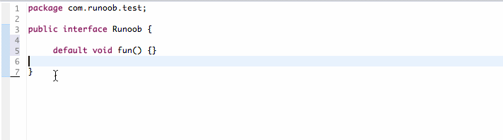

Java 修飾子
Java言語は多くの修飾子を提供しており、主に以下の2種類に分けられます：
- アクセス修飾子
- 非アクセス修飾子
修飾子はクラス、メソッド、変数を定義するために使用され、通常は文の先頭に置かれます。次の例で説明します：
アクセス制御修飾子
Javaでは、アクセス制御修飾子を使用して、クラス、変数、メソッド、コンストラクタへのアクセスを保護できます。Javaは4種類の異なるアクセス権限をサポートしています。
-
default(デフォルト、何も書かない): 同じパッケージ内で可視。修飾子を使用しない。使用対象: クラス、インターフェース、変数、メソッド。
-
private: 同じクラス内で可視。使用対象: 変数、メソッド。注意: クラス（外部クラス）を修飾することはできません。
-
public: すべてのクラスに可視。使用対象: クラス、インターフェース、変数、メソッド
-
protected: 同じパッケージ内のクラスとすべてのサブクラスに可視。使用対象: 変数、メソッド。注意: クラス（外部クラス）を修飾することはできません。。
以下の表でアクセス権限を説明できます：
| 修飾子 | 現在のクラス | 同じパッケージ内 | サブクラス（同じパッケージ） | サブクラス（異なるパッケージ） | 他のパッケージ |
|---|---|---|---|---|---|
public |
Y | Y | Y | Y | Y |
protected |
Y | Y | Y | Y/N（説明） | N |
default |
Y | Y | Y | N | N |
private |
Y | N | N | N | N |
デフォルトアクセス修飾子 - キーワードを使用しない
クラス、変数、メソッド、コンストラクタの定義でアクセス修飾子を指定しない場合、それらはデフォルトでデフォルトアクセス修飾子を持ちます。
デフォルトアクセス修飾子のアクセスレベルはパッケージレベルであり、同じパッケージ内の他のクラスからのみアクセスできます。
次の例のように、変数とメソッドの宣言では修飾子を使用しなくてもかまいません。
例
上記の例では、MyClass クラスとそのメンバー変数 x およびメソッド display() はすべてデフォルトアクセス修飾子を使用して定義されています。MyOtherClass クラスは同じパッケージ内にあるため、MyClass クラスとそのメンバー変数・メソッドにアクセスできます。
プライベートアクセス修飾子 - private
プライベートアクセス修飾子は最も厳しいアクセスレベルであり、宣言されたprivateメソッド、変数、コンストラクタは所属クラスからのみアクセスでき、クラスとインターフェースは private として宣言できません。private。
private アクセス型として宣言された変数は、クラス内の public ゲッターメソッドを通じてのみ外部クラスからアクセスできます。
private アクセス修飾子の主な用途は、クラスの実装詳細を隠蔽し、クラスのデータを保護することです。
次のクラスはプライベートアクセス修飾子を使用しています：
例では、Logger クラスの format 変数は private 変数であるため、他のクラスはこの変数の値を直接取得・設定できません。他のクラスがこの変数を操作できるようにするため、2つの public メソッド、getFormat()（format の値を返す）と setFormat(String)（format の値を設定する）を定義しています。
パブリックアクセス修飾子 - public
public として宣言されたクラス、メソッド、コンストラクタ、インターフェースは、他のどのクラスからもアクセスできます。
相互にアクセスする複数の public クラスが異なるパッケージにある場合は、対応する public クラスを含むパッケージをインポートする必要があります。クラスの継承により、クラスのすべての public メソッドと変数はサブクラスに継承されます。
以下のメソッドはパブリックアクセス制御を使用しています：
Java プログラムの main() メソッドは public に設定する必要があります。そうしないと、Java インタプリタはそのクラスを実行できません。
プロテクテッドアクセス修飾子 - protected
protected は以下の2つの観点から分析して説明する必要があります：
サブクラスと基底クラスが同じパッケージにある場合: protected として宣言された変数、メソッド、コンストラクタは、同じパッケージ内の他のどのクラスからもアクセスできます。
サブクラスと基底クラスが同じパッケージにない場合: サブクラス内では、サブクラスのインスタンスは基底クラスから継承した protected メソッドにアクセスできますが、基底クラスのインスタンスの protected メソッドにはアクセスできません。
protected はデータメンバー、コンストラクタ、メソッドメンバーを修飾できます。クラスを修飾することはできません（内部クラスを除く）。。
インターフェースおよびインターフェースのメンバー変数とメンバーメソッドは protected として宣言できません。次の図を見てください：

サブクラスは protected 修飾子で宣言されたメソッドと変数にアクセスできるため、無関係なクラスがこれらのメソッドと変数を使用するのを防ぎます。
以下の親クラスは protected アクセス修飾子を使用しており、サブクラスは親クラスの openSpeaker() メソッドをオーバーライドしています。
openSpeaker() メソッドを private として宣言すると、AudioPlayer 以外のクラスはこのメソッドにアクセスできなくなります。
openSpeaker() を public として宣言すると、すべてのクラスがこのメソッドにアクセスできます。
このメソッドを所属クラスのサブクラスにのみ公開したい場合は、そのメソッドを protected として宣言します。
protected は Java のクラスメンバーアクセス権限修飾子の中で最も理解しにくいものの1つです。詳細については、以下を参照してください：Java protected キーワード詳解。
アクセス制御と継承
以下のメソッド継承のルールに注意してください：
親クラスで public として宣言されたメソッドは、サブクラスでも public でなければなりません。
親クラスで protected として宣言されたメソッドは、サブクラスで protected または public として宣言する必要があり、private として宣言することはできません。
-
親クラスで private として宣言されたメソッドは、サブクラスに継承されません。
非アクセス修飾子
他の機能を実現するために、Java は多くの非アクセス修飾子も提供しています。
static 修飾子は、クラスメソッドとクラス変数を修飾するために使用されます。
final 修飾子は、クラス、メソッド、変数を修飾するために使用されます。final で修飾されたクラスは継承できず、修飾されたメソッドは継承クラスによって再定義できず、修飾された変数は定数であり、変更できません。
abstract 修飾子は、抽象クラスと抽象メソッドを作成するために使用されます。
synchronized と volatile 修飾子は、主にスレッドプログラミングに使用されます。
static 修飾子
-
静的変数：
static キーワードは、オブジェクトから独立した静的変数を宣言するために使用されます。クラスのインスタンスがいくつ生成されても、静的変数のコピーは1つだけです。静的変数はクラス変数とも呼ばれます。ローカル変数は static 変数として宣言できません。
-
静的メソッド：
static キーワードは、オブジェクトから独立した静的メソッドを宣言するために使用されます。静的メソッドはクラスの非静的変数を使用できません。静的メソッドはパラメータリストからデータを取得し、それらのデータを計算します。
クラス変数とメソッドへのアクセスは、直接classname.variablename 和 classname.methodnameの方法でアクセスします。
次の例のように、static 修飾子はクラスメソッドとクラス変数を作成するために使用されます。
上記の例を実行した結果は次のとおりです：
Starting with 0 instances Created 500 instances
final 修飾子
final 変数：
final は「最後の、最終的な」という意味を表し、変数は一度代入されると再代入できません。final で修飾されたインスタンス変数は、明示的に初期値を指定する必要があります。
final 修飾子は通常、static 修飾子と一緒に使用してクラス定数を作成します。
例
final メソッド
親クラスの final メソッドはサブクラスに継承できますが、サブクラスによってオーバーライドすることはできません。
final メソッドを宣言する主な目的は、そのメソッドの内容が変更されるのを防ぐことです。
以下に示すように、final 修飾子を使用してメソッドを宣言します。
final クラス
final クラスは継承できません。final クラスの特性を継承できるクラスはありません。
例
abstract 修飾子
抽象クラス：
抽象クラスはオブジェクトのインスタンス化には使用できません。抽象クラスを宣言する唯一の目的は、将来そのクラスを拡張することです。
クラスは abstract と final の両方で同時に修飾することはできません。クラスが抽象メソッドを含む場合、そのクラスは必ず抽象クラスとして宣言する必要があります。そうしないとコンパイルエラーが発生します。
抽象クラスは抽象メソッドと非抽象メソッドを含むことができます。
例
抽象メソッド
抽象メソッドは実装を持たないメソッドであり、そのメソッドの具体的な実装はサブクラスによって提供されます。
抽象メソッドは final および static として宣言することはできません。
抽象クラスを継承するすべてのサブクラスは、そのサブクラス自体が抽象クラスでない限り、親クラスのすべての抽象メソッドを実装する必要があります。
クラスが複数の抽象メソッドを含む場合、そのクラスは抽象クラスとして宣言する必要があります。抽象クラスは抽象メソッドを含まなくてもかまいません。
抽象メソッドの宣言はセミコロンで終わります。例：public abstract sample();。
例
synchronized 修飾子
synchronized キーワードで宣言されたメソッドは、同時に1つのスレッドからのみアクセスできます。synchronized 修飾子は4つのアクセス修飾子に適用できます。
例
transient 修飾子
シリアル化されたオブジェクトが transient で修飾されたインスタンス変数を含む場合、Java 仮想マシン（JVM）はその特定の変数をスキップします。
この修飾子は変数を定義する文に含まれ、クラスと変数のデータ型を前処理するために使用されます。
例
volatile 修飾子
volatile で修飾されたメンバー変数は、スレッドがアクセスするたびに、共有メモリからそのメンバー変数の値を強制的に再読み取りします。また、メンバー変数が変更されると、スレッドは変更値を共有メモリに強制的に書き戻します。これにより、どの時点でも、2つの異なるスレッドは常に同じメンバー変数の同じ値を参照します。
volatile オブジェクト参照は null の場合があります。
例
通常、あるスレッドが run() メソッドを呼び出し（Runnable で開始されたスレッド）、別のスレッドが stop() メソッドを呼び出します。 もし1行目の中のバッファの active の値が使用される場合、2行目の active の値が false の場合、ループは停止しません。
しかし、上記のコードでは volatile で active を修飾しているため、このループは停止します。
その他の拡張
tianqixin
429***967@qq.com
JAVA のクラス（外部クラス）には2つのアクセス権限があります: public、default。
一方、メソッドと変数には4つのアクセス権限があります: public、default、protected、private。
そのうち、デフォルトのアクセス権限と protected は非常に似ていますが、微妙な違いがあります。
修飾子: abstract、static、final
tianqixin
429***967@qq.com
大白小爱
362***275@qq.com
世界全体をひとつの塊として捉え、同時に4つの階層に分けます: 国連（public）【他のパッケージ】、国家（protected）【継承する子孫】、州（default）【同じパッケージ】、個人（private）【現在のクラス】。
国連が制定したルールは全員が使用でき、国家が制定したものは国内でのみ使用でき、各連邦州は地域の状況に応じて現地の民法を制定でき、個人が制定したものは個人が使用します。
大白小爱
362***275@qq.com
dsfsdf
dsf***@126.com
static グローバル変数と通常のグローバル変数：static グローバル変数は一度だけ初期化され、他のファイルユニットでの参照を防ぎます;
static ローカル変数と通常のローカル変数：static ローカル変数は一度だけ初期化され、次回は前回の結果値に基づきます；
static 関数と通常の関数：static 関数はメモリ内に1つだけ存在しますが、通常の関数は呼び出しのたびに1つのコピーを保持します。
dsfsdf
dsf***@126.com
Real
zen***0522@163.com
参考アドレス
静的変数は値を変更できないという意味ではありません。値を変更できないものは定数と呼ばれます。静的変数が持つ値は変更可能であり、かつ最新の値を保持します。静的と呼ばれるのは、関数の呼び出しや終了に伴って変化しないためです。つまり、前回関数を呼び出したときに静的変数に特定の値を代入した場合、次回の関数呼び出し時にその値は保持されます。
Real
zen***0522@163.com
参考アドレス
Charlie Lee
101***4851@qq.com
修飾子について：
1.「アクセス修飾子」と「非アクセス修飾子」に分けられます。名前のとおり、「アクセス修飾子」はアクセス権限に関連する修飾子です。
2.アクセス修飾子の中で注意すべき点：
Private アクセス修飾子の使用は、主にクラスの実装詳細を隠し、クラスのデータを保護するために使用されます；
public として宣言されたクラス、メソッド、コンストラクタ、インターフェースは、他のどのクラスからもアクセスできます；
protected アクセス修飾子はクラスとそのメソッドを修飾できますが、インターフェースおよびインターフェースのメンバー変数とメンバーメソッドは protected として宣言できません；
3.static 修飾子の理解について
静的変数をどう理解すればよいでしょうか。簡単に言うと、静的変数はクラスの共有属性です。ここで拙い例えを挙げます。「クラスの学生」を1つのクラスと仮定し、クラスのどの学生も1つのオブジェクトに相当します。すると、すべての学生の授業料は同じですよね？「授業料」は「静的変数」に相当します。その特徴は、どの「オブジェクト」（つまり学生）の専有属性にも属さず、みんなの「共有」であることです。もし変われば、すべての学生の授業料が変わります。各学生に授業料を変更する権限があると仮定すると、どの学生が授業料（この静的変数）を変更しても、すべての学生の授業料が変わります。
また、静的メソッドはクラスの静的変数のみ使用できます。
Charlie Lee
101***4851@qq.com
啥也不想
tri***lboy@163.com
transient
オブジェクトがシリアル化されるとき（バイト列をターゲットファイルに書き込むとき）、transient はインスタンス内でこのキーワードを使用して宣言された変数の永続化を防ぎます。オブジェクトがデシリアル化されるとき（ソースファイルからバイト列を読み取って再構築するとき）、このようなインスタンス変数の値は永続化および復元されません。
import java.io.FileInputStream; import java.io.FileNotFoundException; import java.io.FileOutputStream; import java.io.IOException; import java.io.ObjectInputStream; import java.io.ObjectOutputStream; import java.io.Serializable; //定义一个需要序列化的类 class People implements Serializable{ String name; //姓名 transient Integer age; //年龄 public People(String name,int age){ this.name = name; this.age = age; } public String toString(){ return "姓名 = "+name+" ,年龄 = "+age; } } public class TransientPeople { public static void main(String[] args) throws FileNotFoundException, IOException, ClassNotFoundException { People a = new People("李雷",30); System.out.println(a); //打印对象的值 ObjectOutputStream os = new ObjectOutputStream(new FileOutputStream("d://people.txt")); os.writeObject(a);//写入文件(序列化) os.close(); ObjectInputStream is = new ObjectInputStream(new FileInputStream("d://people.txt")); a = (People)is.readObject();//将文件数据转换为对象（反序列化） System.out.println(a); // 年龄 数据未定义 is.close(); } }実行結果は次のとおりです：
volatile
volatile はどの変数の前にも使用できますが、final 変数の前には使用できません。final 型の変数は変更が禁止されているためです。
使用シーンの1つとして、シングルトンパターンで DCL ダブルロック検出（double checked locking）メカニズムを採用する場合、マルチスレッドアクセスの状況では volatile を使用して修飾でき、マルチスレッド下での可視性を保証します。欠点はパフォーマンスの損失があることです。したがって、シングルスレッドの場合はこの修飾子を使用する必要はありません。
class Singleton{ private volatile static Singleton instance = null; private Singleton() { } public static Singleton getInstance() { if(instance==null) { synchronized (Singleton.class) { if(instance==null) instance = new Singleton(); } } return instance; } }啥也不想
tri***lboy@163.com
xhm_hm
504***020@qq.com
final 変数について：
xhm_hm
504***020@qq.com
happywith
735***469@qq.com
参考アドレス
finalおよびfinal staticで修飾された変数の初期化方法：
//-----------------成员变量------------------// //初始化方式一，在定义变量时直接赋值 private final int i = 3; //初始化方式二,声明完变量后在构造方法中为其赋值 //如果采用用这种方式，那么每个构造方法中都要有j赋值的语句 private final int j; public FinalTest() { j = 3; } //如果取消该构造方法的注释，程序就会报错，因此它没有为j赋值 /*public FinalTest1(String str) { }*/ //为了方便我们可以这样写 public FinalTest(String str) { this(); //调用无参构造器 } //下面的代码同样会报错，因为对j重复赋值 /*public FinalTest1(String str1, String str2) { this(); j = 3; }*/ //初始化方式三，声明完变量后在构造代码块中为其赋值 //如果采用此方式，就不能在构造方法中再次为其赋值 //构造代码块中的代码会在构造函数之前执行，如果在构造函数中再次赋值， //就会造成final变量的重复赋值 private final int k; { k = 4; } //-----------------类变量（静态变量）------------------// //初始化方式一，在定义类变量时直接赋值 public final static int p = 3; //初始化方式二，在静态代码块中赋值 //成员变量可以在构造函数中赋值，但是类变量却不可以。 //因此成员变量属于对象独有，每个对象创建时只会调用一次构造函数， //因此可以保证该成员变量只被初始化一次； //而类变量是该类的所有对象共有，每个对象创建时都会对该变量赋值 //这样就会造成变量的重复赋值。 public final static int q; static { q = 3; }happywith
735***469@qq.com
参考アドレス
氷雨
614***768@qq.com
fina、static、abstract同時に使用できない問題：
1、finalはabstractと同時に使用できません。例：
原因：abstractはサブクラスに継承・オーバーライドされる必要があり、そうでなければ意味がありません。一方finalは継承を禁止する働きがあり、両者は互いに排他的であるため、併用できません。
2：staticとabstractも併用できません。例：
abstract static void m(){}原因：staticはクラスレベルでありサブクラスにオーバーライドできません。一方abstractは継承されて実装される必要があります。両者は互いに矛盾します。
氷雨
614***768@qq.com
ytj神墨癸
yua***1999@outlook.com
正確に言うと、protectedキーワードはthisおよびsuper内の対応するメンバーにアクセスできることを示しますが、（同パッケージでない）他のクラスインスタンス内の対応するメンバーにはアクセスできません。
例えば、ObjectクラスはすべてのJavaクラスの基底クラスであり、protectedなclone()メソッドを持っています。私たちはあるクラスのメソッド内でthis.clone()を呼び出すことができ、super.clone()も呼び出すことができますが、（パッケージが異なり、かつこのメソッドをpublic権限に昇格させていない）他のサブクラスインスタンスのclone()は呼び出すことができません。「サブクラスからアクセスできる」と理解すると、Object.clone()のprotectedは意味がなくなります。なぜならすべてのクラスはObjectのサブクラスであり、それではpublicと変わらないからです。
/** * Object.java: 220 * protected native Object clone() throws CloneNotSupportedException; */ public class MyClass /* extends Object */ { @Override public Object clone() throws CloneNotSupportedException { return super.clone(); // OK. } public static Object bad(AnotherClassFromAnotherPackage obj) throws CloneNotSupportedException { return obj.clone(); // Error. } }ytj神墨癸
yua***1999@outlook.com
赵铁锤
hbd***b@hotmail.com
protected修飾子について、自分がまとめた規則を少し共有します：
protectedで修飾されたメソッドの呼び出しに遭遇した場合、継承関係を遡ってそのメソッドの最後の実装が現在の呼び出し箇所と同じパッケージ内にあるかどうかを探します。もしあれば呼び出せますが、なければ呼び出せません。ただし例外が1つあり、遡って実装を探す途中で現在の呼び出し箇所が属するクラスを通る場合、このクラスがそのメソッドを実装していなくてもコンパイルは通ります。
実際、protectedの理解をわかりやすく言うと、このメソッドは、あなたが私と一緒にいる（同じパッケージ）場合にのみ使わせてあげる、一緒にいない場合は使わせない、ということです。
赵铁锤
hbd***b@hotmail.com
胡友
190***3839@qq.com
Javaアクセス権限制御修飾子：
private<default<protected<public、権限は小さいものから大きいものへと増加していきます。
privateはメソッド、プロパティ、メンバークラスに修飾でき、可視性は自クラスのみです（修飾されると継承できません）。
defaultはクラス、メソッド、プロパティ、メンバークラスに修飾でき、可視性は同一パッケージ内です。
protectedはメソッド、プロパティ、メンバークラスに修飾でき、可視性は同一パッケージおよび自身のサブクラスです。
publicはクラス、メソッド、プロパティ、メンバークラスに修飾でき、可視性は同一パッケージ、外部パッケージ、サブクラスに及びます。
メソッド権限の継承とオーバーライド：オーバーライドする権限は親クラスのメソッドの権限以下であってはなりません。
非アクセス権限制御修飾子：
final:
クラスに修飾する場合：そのクラスは継承できません。
メソッドに修飾する場合：継承されたメソッドはオーバーライドできません。
プロパティに修飾する場合：プロパティは一度しか代入できず、デフォルト値が与えられていない場合は、コンストラクタ内で代入する必要があります。
static:
staticはメンバー変数とメソッドに修飾されます。staticで修飾されたメソッドと変数はクラスに属し、メソッド領域に優先的にロードされるため、ヒープメモリ内にまだロードされていないオブジェクトからも共有アクセスできます。staticはローカルブロック内の変数には修飾できません。そのデータを共有できないためです。staticで修飾されたメソッドは、そのメソッド内でそのクラスのオブジェクトのプロパティやメソッドにアクセスできません。なぜなら、staticで修飾されたメソッドとメンバー変数を初期化する文ブロックのとき、オブジェクトはまだヒープメモリにロードされておらず、thisオブジェクトの参照もないため、オブジェクトのメソッドやプロパティにアクセスできないからです。アクセスする必要がある場合は、先にオブジェクトをnewしなければなりません。
abstract:
abstractはクラスとメソッドに修飾されます。クラスに修飾すると抽象クラスになります。抽象クラス内のメソッドはabstractで修飾でき、中括弧を書かずにセミコロンで終えると抽象メソッドになります。
synchronize：
synchronizeキーワードはメソッドに修飾され、マルチスレッドで使用されます。このメソッドは同時に1つのスレッドからしかアクセスできず、ロックはthisです。
transient:
変数の定義文に修飾すると、シリアライズされてハードディスクに保存されることはありません。
volatileメンバー変数に修飾される場合、マルチスレッドでその変数にアクセスするたびにスレッドから再取得され、実際のデータが見えるようになります。
胡友
190***3839@qq.com